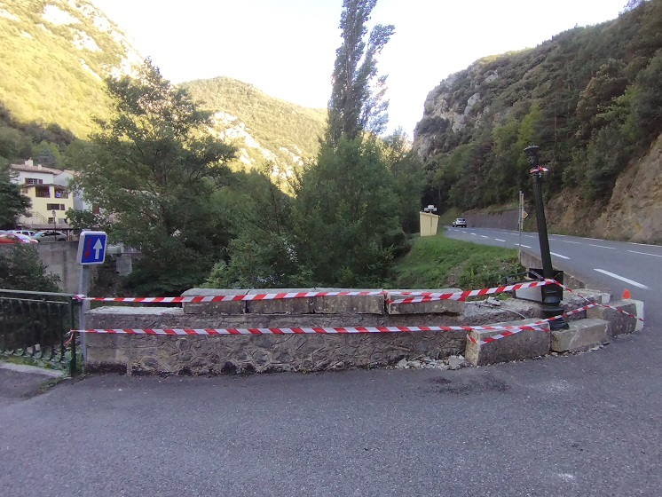
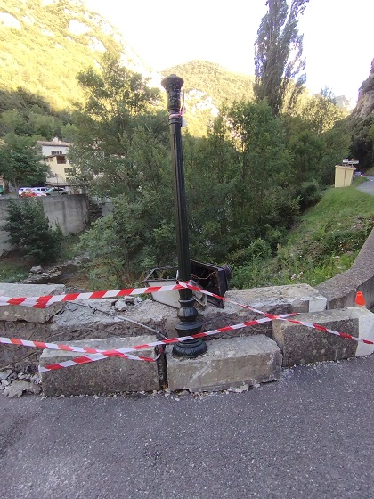
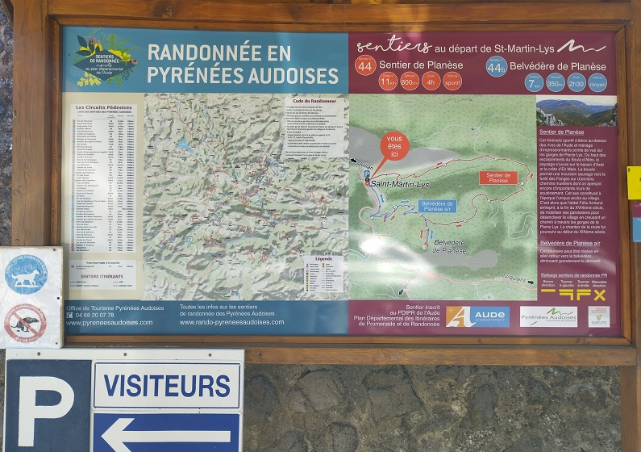
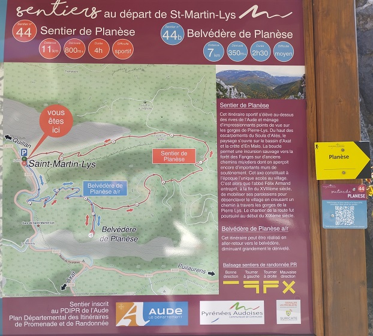
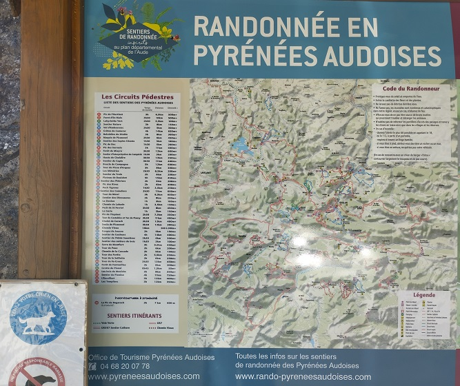

Petit village de la haute vallée de l'Aude (11), traversé par ce fleuve parfois impétueux.
Fleuve qui est à l'origine de l'emplacement actuel du village, en contre bas du col de St Martin.
En effet, la forêt des Fanges, autrefois forêt royale, couronne les crêtes au dessus de notre vallée ; ses sapins noirs géants ont servi au mâtage à de nombreux bateaux de la marine française.
L'exploitation du bois nécessitait un port :
- pour la mise à l'eau des grumes, phase de durcissement du bois,
- et leur transport rapide vers les grandes cités.
Saint Martin était stratégiquement placé, pour descendre facilement les troncs, puis pour que des radeliers (ou carrassiers) puissent conduire ensuite ces arbres abattus jusqu'à Quillan, de l'autre côté des gorges de la Pierre-Lys.
Cliquer sur la partie de St martin que vous souhaitez découvrir
20 décembre 2024 Le projet de la gare avance
18 octobre 2024 La Commission Permanente de la Région Occitanie, adopte le dossier d'étude paysagère et technique globale autour de la gare pour 6000 euros.
Septembre 2024 - Entrée du pont sur la route départementale accident
 Eté 2024 - Changement du panneau signalétique sur la place de l'ancienne école - ce n'est plus une histoire du village qui est proposée... Mais seulement des parcours de randonnée - Dommage
  2024 - Télésurveillance

2024 - Défibrilateur

Vélo rail du TPCF
Troisième offre, "Le Grand Défi" : 12km de parcours. Départ Gare d'Axat => St Martin-Lys => Campérié => Axat (pour les sportifs...)
28/01/2025
22/01/2025 au 28/01/2025
19/01/2025
16/01/2025
12/01/2025
10/01/2025
09/01/2025
07/01/2025
02/01/2025
30/12/2024
29/12/2024
28/12/2024
26/12/2024
22/12/2024
20/12/2024
19/12/2024
16/12/2024
12/12/2024
11/12/2024
10/12/2024
08/12/2024
05/12/2024 au 08/12/2024
04/12/2024
02/12/2024
Cliquer ici pour un historique complet du site
Les cartes proposées dans le sites sont issues de www.geoportail.gouv.fr/carte
Les références par rapport aux documents en liens ou aux photos sont directement indiquées dans les pages concernées.
Je remercie Paul Teulière pour ses superbes photos qui permettent d'agrémenter le site, ainsi qu'Amandine et Silas Teulière qui ont fourni quelques clichés.
Pour m'envoyer un mail, cliquer sur l'icône ci-dessous (ou copier l'adresse e-mail en faisant clic droit sur l'icône)